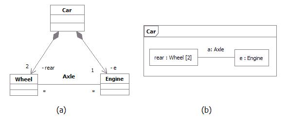

Definition
According to UML,a Class is a subtype of both EncapsulatedClassifier and metaclass Class, which brings to a Class the
capability to have an internal structure and ports. Also, a component is defined by UML as a subtype of Class.
Therefore, within RUP context, we refer to both components and classes as being
structured classes.
Part
An instance of a structured class contains an object or set of objects corresponding to each part. All such instances
are destroyed when the containing structured class instance is destroyed.
The example below shows two possible views of the Car class:
In figure (a), Car is shown as having a composition association with role name
rear to a class Wheel and a composition association with role name
e to a class Engine. Any instance of class Engine can be linked
to an arbitrary number of instances of class Wheel.
In figure (b), the same is specified. However, in addition, in figure (b) it is specified that:
-
rear and e belong to the internal structure of the class
Car. This allows specification of detail that holds only for instances of the
Wheel and Engine classes within the context of the class
Car, but which does not hold for wheels and engines in
general.
-
within the context of class Car, the instance playing the role of e may
only be connected to two instances playing the role of rear. In addition, the instances
playing the e and rear roles may only be linked if they are roles of the
same instance of class Car.
-
In other words, additional constraints apply on the instances of the classes Wheel and
Engine, when they are playing the respective roles within an instance of class
Car. These constraints are not true for instances of Wheel and
Engine in general. Other wheels and engines may be
arbitrarily linked as specified in the figure (a).

Example: Parts playing their roles inside a structured class
Connector
A connector is an instance of relationship between two parts in a structured class. It is a link to allow
communication. Connectors may be implemented by ordinary associations or by transient relationships, such as procedure
parameters, variables, global values, or other mechanisms.
The internal "wiring" of a structured class is specified with assembly connectors and delegation connectors:
-
Within the implementation of a structured class, assembly connectors connect ports of different
parts. A message sent on a port of one structured class is received on a connected port of another structured
class. A set of parts may be wired together through their ports. A part need not know anything about other parts,
except that they exist and satisfy the constraints on connected ports. Communication among structured classes is
modeled by their ports.
-
-
A delegation connector connects an external port of a structured class with a port on one of its
internal parts. A message received by the external port is passed to the port on the internal part; a message sent
by the internal port is passed to the external port and then to the structured class connected to it.
Port
A port is a structural feature of a structured class. Encapsulation can be increased by forcing communications from
outside the structured class to pass through ports obeying declared interfaces, which brings additional precision in
specification and interconnection for that structured class.
The required and provided interfaces of a port specify everything that is necessary for interactions through that
interaction point. If all interactions of a structured class with its environment are achieved through ports, then the
internals of the structured class are fully isolated from the environment. This allows such a structured class to be
used in any context that satisfies the constraints specified by its ports.
There is no assumption about how a port is implemented. It might be implemented as an explicit object, or it might be
merely a virtual concept that does not explicitly appear in the implementation.
Examples of ports are provided below:
Example 1

Port of an Engine being used by a Car and a Boat
The figure above shows a class Engine with a port p and two interfaces:
-
A provided interface powertrain, which specifies the services that the engine offers at this port
(i.e., the operations and receptions that are accessible by communication arriving at this port).
-
A required interface power, which specifies the services that the engine expects its environment
to provide.
At port p, the Engine class is completely encapsulated; it can be specified without
any knowledge of the environment the engine will be embedded in. As long as the environment obeys the constraints
expressed by the provided and required interfaces of the engine, the engine will function properly.
To illustrate that, two uses of the Engine class are shown in this example:
-
The Car class connects port p of the engine to a set of wheels by means of the
axle.
-
The Boat class connects port p of the engine to a propeller by means of the
shaft.
As long as the interaction between the Engine and the part linked to its port p obeys
the constraints specified by the provided and required interfaces, the engine will function as specified, whether it is
an engine of a car or an engine of a boat.
Furthermore, even if Engine had other declared ports, such as a port f for
Fuel Consumption, the wheels of a car and the propeller of a boat would still access the
Engine through port p. Port f would be of interest of a fuel meter,
regardless of what kind of fuel is being used and what kind of fuel meter cars and boats might have.
Example 2
This example of ports is based on Java Logging API, which is a package that provides the following classes and
interfaces of the Java 2 platform's core logging facilities, among others:
-
Logger is the main entity on which applications make logging calls. It is used to log messages for
a specific system or application component
-
Level gives a guide to the importance and urgency of a log message
-
Filter provides fine grain control of what is logged, beyond the control provided by the log
levels
-
Handler takes messages from a Logger and exports them to different destinations (memory, output
streams, consoles, files and sockets)
-
Formatter provides support for formatting log records
Those classes and interfaces are involved in two important kinds of collaborations. Some classes and interfaces are
used to write to the log while others are used to administrate the log. The figure below shows two different
collaborations that clients and administrators have with the log, modeled as UML collaborations:
-
Writing collaboration, where the LogClient role connects to the
LogWriter role in order to write to the log.
-
Administration collaboration, where the LogAdministrator role connects to the
LogController role in order to access the log and change log settings.
Different collaborations that clients and administrators have with the log
One possible UML 2.0 representation to model the logging services and its collaborations would be using a component
with ports and declared interfaces, as shown in the figure below:

Java Logging API package being implemented as a component with provided interfaces grouped into ports
In the Java Logging API specification, some of the logging services were implemented as classes and others as
interfaces. In this example, we model each of those services as provided interfaces, which could be realized by parts
inside the component. The two different kinds of behavior related to Writing and
Administration collaborations mentioned above could be represented by interfaces logically grouped
into ports. Therefore, we have:
-
Logger and Level interfaces grouped into LogWriter port. Those
interfaces are accessed by log clients to write to the log.
-
Handler, Filter and Formatter interfaces grouped into
LogController port. Those interfaces are accessed by log administrators to access the log and
change log settings.
This modeling alternative brings a separation of concerns, by logically grouping interfaces into different ports. We
have additional precision for the component specification and the interconnection it can have with the external world.
Modeling
During design, classes and components may be decomposed into collections of connected parts that may be further
decomposed in turn.
A composite structure diagram can be used to show the decomposition of a structured class. As an
example, the figure below shows a composite structure diagram for the box office in the ticketing system. This class is
decomposed into three parts:
-
A ticket seller interface
-
A performance guide that retrieves performances according to date and other criteria
-
A set of databases that contain the data on the performances and the tickets.
Each part interacts through a well-defined interface specified by its ports. The entire box office interacts with the
outside through a port. Messages on this port are dispatched to the ticket seller class, but the internal structure of
the box office class is hidden from outside clients.

Example: Composite structure diagram for a ticketing system.
|